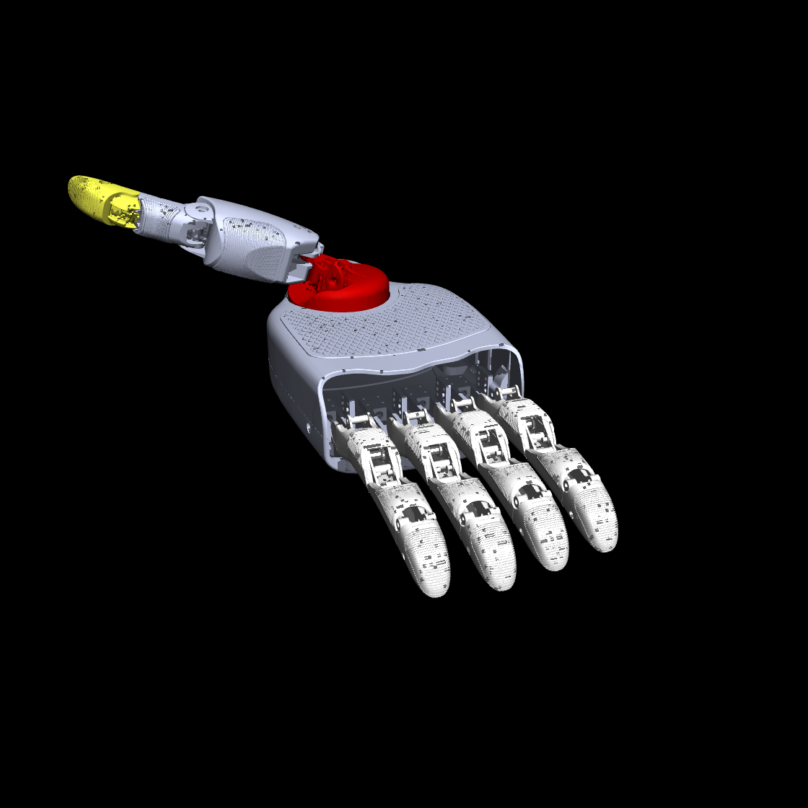
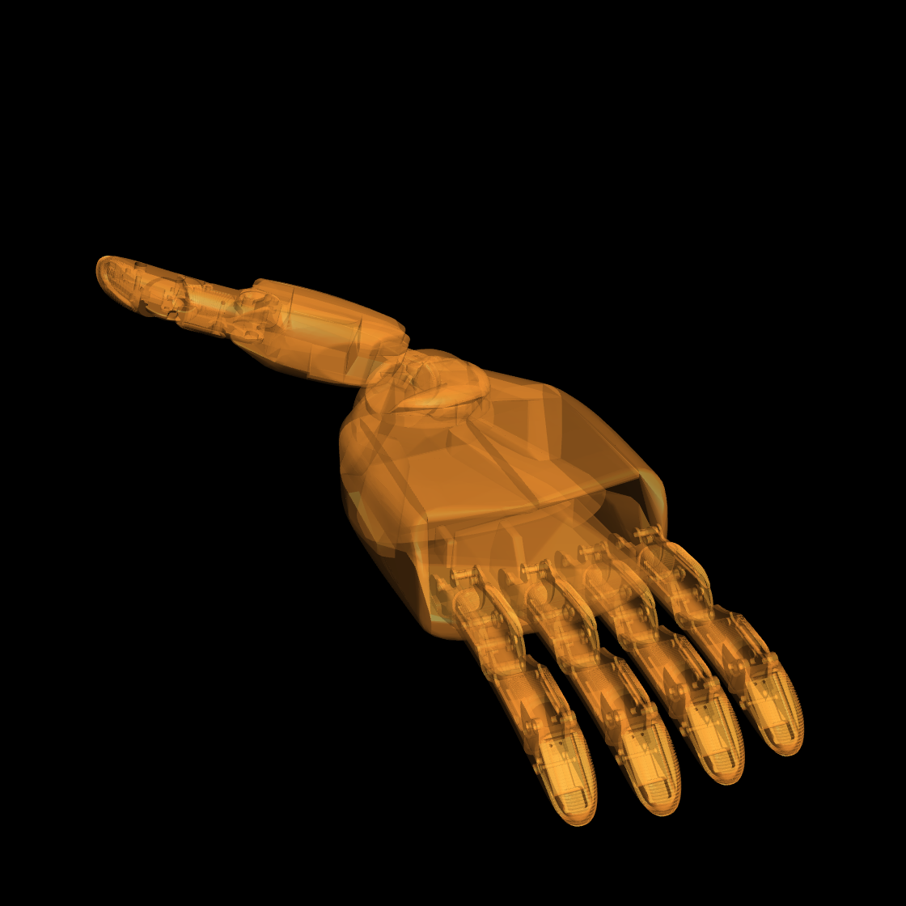
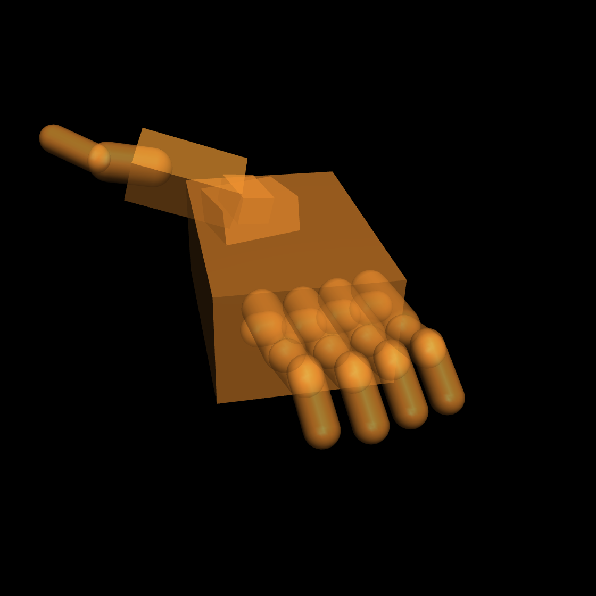
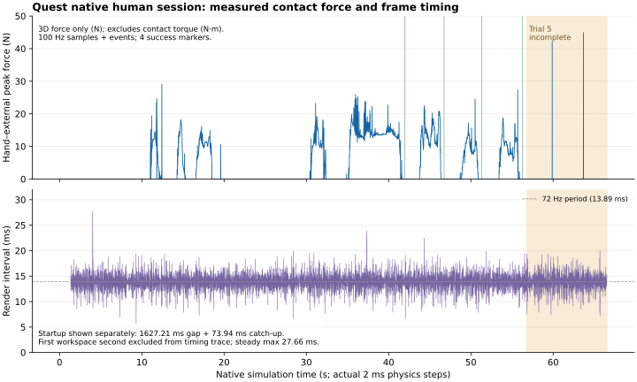

本页保存实际运行过的系统实验：Quest 遥操作、RT 目标与物理接触，以及早期 RL 碰撞简化和 JAX→Warp 迁移。Hand Control 手册解释链路和坐标，RT 候选页保留未完成的验证，RL 实验记录记录 reward 与 checkpoint。
下方 §1–8 是 8 月 RL 后端的历史记录，§9 起为 9 月 Quest 原生 MuJoCo 链路。二者的模型、硬件和采样口径不同；旧 RL 的“22 个基元／CPU 20 μs”不能直接套用到当前 Quest APK。



另一角度:视觉 · 旧碰撞 · 新碰撞(角度不合适可以重渲)。
脚本 gen_collision.py:取每个链节视觉 mesh 的顶点云 → PCA 定主轴 → 顶点分位数定尺寸 → 生成单一基元。没动的:视觉 mesh(外观零变化)、显式 <inertial>(质量/惯量即动力学零变化)。效果:接触对 hammer 3260→119、pick 3006→45,mesh 对归零;编译从小时级失败到 20–28 秒。
诚实答案:牺牲了形状保真(接触点/法线有毫米级偏差,棱和凹陷没了),没牺牲任务级正确性(动力学零损;接触模型本身的 sim-to-real 误差远大于毫米级形状误差;四次训练 7380–7710 等价复现)。以后若某任务需要指尖棱边细节,只精化指尖那一个 geom 即可。
常见误解:"简化 = 关掉自碰撞"。实际上简化的只是形状,自碰撞开着(conaffinity=3),手指之间 194 对基元碰撞对每步都在算——实测自然姿态下就有 9 个掌骨间接触被实时检测解算。正因为换成了便宜的基元,自碰撞才开得起(旧 mesh 时代曾被迫关掉,基本体化后按 Leap 惯例恢复)。横查业界:
| 手 | 来源 | 碰撞方案 | 自碰撞 |
|---|---|---|---|
| Leap | menagerie / playground 上游 | 67 个 box,纯基元(指尖也是 box) | 开,381 对 |
| Shadow(OpenAI 版) | Gymnasium-Robotics | 16 capsule + 5 box + 1 mesh | 开 |
| Shadow(官方版) | menagerie | 29 基元 + 7 mesh(腕/前臂) | 开 |
| Allegro | menagerie / dexjoco | capsule + box | 开 |
| L20(本项目) | — | 21 capsule + box,纯基元 | 开,194 对 |
结论:每指节一根 capsule 是灵巧手 RL 的行业标准(OpenAI 转笔/魔方的 Shadow 就是这么建的);之前的 82 凸包 + 全 mesh 才是异类。Leap/Shadow 出厂即基元,不需要我们的方法;L20 厂商只给视觉 STL,凸包也是我们早期自己 VHACD 的,这次是用更好的方法替换自己的旧方案。
最初任何 L20 任务都编译不出来:XLA 编译要 40–60 GB 主机内存、小时级不收敛,4090(46 GB RAM)被 OOM killer 无声击杀,berlin 上编译成功后又死于装载(std::bad_alloc/段错误)。三层根因逐层拆除:
| 根因 | 修复 | 效果 |
|---|---|---|
| 钉帽 cylinder × 手 mesh 碰撞(MJX 未实现) | 钉帽换同尺寸 box | 能进编译 |
| 手内部 2841 对 mesh×mesh 自碰撞 | 先关闭;基本体化后按 Leap 惯例恢复(381 对基元自碰撞的量级) | 图缩小 7 倍 |
| 82 个碰撞凸包 / 21.6 万顶点 | 上节的 PCA 基元化 | 编译 20–28 秒;接触对 3260→119,低于 Leap 的 577 |
附带修复:hammer 场景 Euler→implicitfast(楔紧接触稳定)、4090 补 80 GB swap、机器分工确立(4090 主力独占,berlin 大显存备份)。
基本体化后 jax 路线完全可用:hammer 51k steps/s(4090),105.8M 步 ≈ 36 分钟;编译缓存需 JAX_PERSISTENT_CACHE_MIN_COMPILE_TIME_SECS=0 才写小条目(大图条目写入仍疑似静默失败,挂账)。第一天全部 reward 迭代(v1→v4)在此后端完成。
我们的 env/launcher → mjx API(稳定层,我们只碰这层)
└─ mjwarp 物理 kernel(打包在 mujoco 里,随 mujoco 版本走)
└─ warp-lang 运行时/编译器(必须精确配对:3.6.0↔1.11.1,3.12.0↔1.16.0,
权威来源 = mujoco-mjx[warp] extra 的钉版本)4090 双栈并存:Mujoco_playground(生产:mujoco 3.6 + warp 1.11 + jax 0.6.2,服务 jax 基线与已验证 warp 训练)、Mujoco_playground_116(实验:上游 e74217b + mujoco 3.12 + warp 1.16)。
| 文件 | 内容 |
|---|---|
level_1_run_config/warp_launch.py 新建 | 策略层:从 trainer_launch 派生、只换 --impl warp + 固定 kernel 缓存目录;smoke_flags()(1M 步 + --num_videos 0);smoke 时 XLA_PYTHON_CLIENT_PREALLOCATE=false 以便与在跑训练共存 |
level_3_train_launch/warp.py 新建 | smoke_warp()(前台冒烟)+ train_detached_warp()(detached,TB 开) |
level_3_evaluation/warp.py 新建 | evaluate_checkpoint_warp():同后端回放,EGL 无头渲染,重 import 全部推迟进函数体 |
main.py 增量 | train-warp / eval-warp 子命令(jax 的 train/eval 一字未动) |
| 三个 L20 env 配置小改 | naccdmax=30*8192;hammer njmax 160→256 |
更新路径:1.11——box 老 venv 本来就能跑,什么都没升,当天 smoke → 完整训练 → 2×2 后端等价验证;1.16——并排新 clone + uv sync --extra cuda + uv pip install mujoco==3.12.0 mujoco-mjx[warp]==3.12.0,生产 venv 全程不动,失败成本 = 删目录。
| # | 坑 | 细节与教训 |
|---|---|---|
| 1 | naccdmax 没配(最大的坑) | CCD 缓冲溢出刷 4200 万行警告,三重伤害:接触静默丢弃(reorient reward 15.6 vs jax 81.3,差点误判"warp 训不动");打印本身拖慢吞吐 5 倍(40k→修复后 195k steps/s,"warp 只快 20%"是这个假象);日志按 GB 增长。教训:容量三件套 naconmax/naccdmax/njmax 一个都不能少,溢出不报错、物理悄悄变假。 |
| 2 | 版本混搭崩溃 | mujoco 3.6 + warp 1.16 → mjx 类型退化成占位符(GraphMode 变 int),put_model 直接 AttributeError。依赖解析器说可解析 ≠ 测试过。 |
| 3 | MUJOCO_GL=egl 设晚了 | MuJoCo 在 import 时选定 GL 后端,模块顶层 import 链提前加载 mujoco → GLFW → 无头必崩。修复:环境变量先行、重 import 推迟进函数体。 |
| 4 | uv sync 默认不带 cuda extra | 新 venv 的 jax 只有 CPU("Unknown backend cuda")。要 --extra cuda。 |
| 5 | njmax=160 差一口气 | hammer 约束行峰值实测 ~175,6687 次溢出——量小但同属静默丢物理,提到 256。 |
| 6 | margin≠0 撞上 1.16 的 MULTICCD | mjx 3.12 的 warp 后端不接受 margin≠0 的几何对(kitchen 带 1mm margin,报 NotImplementedError)。修法:场景 fixup 里 margin 归零(1mm margin 只是接触软化技巧,可弃)。 |
| 7 | 训练完成后的渲染假失败 | 上游脚本收尾渲染视频,headless SSH 下崩掉污染 exit code(训练与 checkpoint 其实都完好)。smoke 加 --num_videos 0;回放走 eval-warp + 无 ffmpeg 时 npz 兜底 + Mac 端编码。 |
| 8 | pgrep -f 自匹配 | ssh 命令行含 "trainer-shim" 字样把自己匹配成"训练在跑",两次假警报(一次差点不敢关机)。 |
| 9 | 归因坑(认知层,比代码坑更危险) | 300M 跑出 2198 平台期,第一反应怪 warp——2×2 对照(jax/warp × seed 1/2 → 7533/7710/7598/7380 同噪声带)证明是任务级 seed 方差。换任何一层之后的异常,先做对照再归因。 |
| 指标 | 简化前 | XLA(jax) | Warp 1.11 | Warp 1.16 |
|---|---|---|---|---|
| 编译 | 小时级失败 | 分钟级 | 冷 30–90 s / 热秒级 | 冷 ~1 分钟 / 热秒级 |
| 吞吐(hammer) | — | 51k steps/s | 177k | 260k |
| 105.8M 步完整训练 | 不可行 | 36 分钟 | 10 分钟 | 约 7 分钟 |
三档 env 探测(hammer,10M 步)把瓶颈钉死:
| num_envs | steps/s | 10M 步 reward | GPU util / 功耗 | 显存 |
|---|---|---|---|---|
| 4096(现配方) | 177k | 254.7 | 100% / 277 W | 4.5 GB |
| 8192 | 188k(+6%) | 216.9 ↓ | 100% / 301 W | 4.7 GB |
| 16384 | 222k(+25%) | 157.7 ↓↓ | 100% / 334 W | 6.9 GB |
解读:每个物理子步是一条 ~上百个小 kernel 的依赖链(碰撞→约束→求解迭代→积分),链内严格串行;摊下来每 kernel 几十微秒,大头是启动/调度的固定成本——util 显示 100%(队列里永远有 kernel)但功耗只有 277/450 W(每个 kernel 吃不饱算力)。env 翻 4 倍吞吐只涨 25%,而总步数预算固定时 env 翻倍 = 梯度更新减半,样本效率明显掉(255→158)——4096 保持不动。
env 加多不需要更多 CPU:CPU 每步提交固定条数的 kernel,与 env 数无关(实测训练进程恒占 1 核,31 核闲置);随 env 涨的只有显存。硬件升级结论:CPU 多核 ❌(1 核没跑满)、内存/显存 ❌(富余)、多 GPU ❌(链条延迟不变)、berlin H200 ❌(主频比 4090 低,延迟受限场景可能反而慢)——唯一对症的是更高频新架构单卡;而最划算的其实是软件升级(1.16 实测白捡 47%)。
实测:Mac 单核跑 L20 手,每步 20 微秒,51k steps/s。teleop 的 500 Hz 实时仿真只占一个核的 1%——不卡不是因为 CPU 并行能力强,是单世界的活儿太少。反直觉对比:4090 warp 在 batch 1024 下 201k steps/s,摊到每个环境只有 ~196 步/秒——单看一个环境,CPU 比 GPU 快 250 倍(GPU 有启动开销、要等整批同步)。GPU 赢的是总吞吐,不是延迟。分工由此天然成立:teleop 用 CPU 原生版(单世界、实时、低延迟),训练用 GPU warp(几千世界、要总吞吐)。
直接 diff 两个 venv 的 mjwarp 源码(+57% 代码):新增柔性体碰撞、刚体睡眠、参数升维到 per-world(wp.array2d,为逐环境域随机化铺路)、CCD 改多接触且拒绝 margin。证伪一个流行猜想:CUDA graph 不是 1.16 的功劳——两个版本默认都是 GraphMode.WARP,1.11 就开着;手部 +39~47% 来自 kernel 重写。
快慢分化的机制:不是 geom 数量,是碰撞对的"成分"。专用碰撞函数表两版本一字不差,关键在哪些对不在表里:capsule/box/plane 系列全有专用快函数(手 100% 命中,吃满 1.16 优化 → +39%);cylinder 对 capsule/box/cylinder 没有专用函数,落进通用 CCD 慢路径(厨房 60% 的对,1.16 的 CCD 更准也更贵 → −4%~−15%)。附赠优化方向:kitchen fixup 时把 31 根 cylinder 换成 capsule/box,967 个 CCD 对整体搬进快路径。
Franka Kitchen(去 Franka)+ L20 的合体模型已在 MjSpec 层拼通(57 body / 238 geom / nv=47,微波炉门、滑柜、旋钮 42 个关节全保留,仿真稳定)。厨房出厂即基元碰撞(89 个活动 geom 全是 box/cylinder/capsule,105 个 mesh 纯视觉)——不需要再做 L20 式简化。实测(batch 1024,物理步):
| 模型 | geom | 1.11 编译 / 吞吐 | 1.16 编译 / 吞吐 |
|---|---|---|---|
| 单 L20 | 44 | 13.1 s / 144.8k | 31.9 s(冷)/ 201.0k |
| 单厨房 | 194 | 31.5 s / 73.8k | 50.3 s / 70.7k |
| 厨房 + L20 | 238 | 2.5 s※ / 57.2k | 6.7 s※ / 48.7k |
※同进程复用已编 kernel——warp 增量编译的特性展示。结论:kitchen 方向编译完全不是问题(jax 上这种规模编译就劝退),吞吐 2.5× 的代价可控(100M 步 ≈ 30–60 分钟);真正的大头是 env 封装(reward/obs/任务定义)。Warp 的 kernel 缓存是版本键控的 PTX,理论可跨设备 rsync(同 warp 版本),但首编只有分钟级,实际不值得搬。
这两天的工程决策几乎都由提问驱动;特别标注:#5 的对照实验设计(旧环境只换 seed)是提问者自己提出的,也是整个归因链里最关键的一步。
| # | 提出的问题 | 由此做的优化/实验 | 结果 |
|---|---|---|---|
| 1 | Warp 能不能解决编译慢?和 Playground 什么关系? | 梳理 MJX 双后端架构;发现 vendored playground 已集成 warp;建 train-warp 平行工具链 | 编译分钟级→秒级,当天落地 |
| 2 | Warp 编译能否存储/跨设备? | kernel 缓存机制分析 + 固定缓存目录 | 版本键控 PTX,可搬但不值得;热启动秒级 |
| 3 | 有训练在跑还能再跑吗? | smoke/eval 关显存预占(PREALLOCATE=false);实测共存 | 小任务可共存,第二个完整训练不建议 |
| 4 | warp 会比 jax 训练更快吗? | 同 env 同超参 A/B 基准 + hammer 全管线对比 | 3.5–5.8×;顺带揪出 naccdmax 大坑 |
| 5 | 为什么 reward 不一致?用旧环境换 seed 验证 | 纯净 HEAD 树对照跑(jax seed-2)+ warp seed-2 判别跑 → 2×2 矩阵 | 后端等价证明;300M 平台期定性为 seed 方差 |
| 6 | 瓶颈在哪?加 env 要更多 CPU 吗?升什么硬件? | 三档 env 探测 + CPU/GPU 占用实测 + 延迟受限解剖 | 4096 保持;硬件升级路线明确(单卡频率>一切) |
| 7 | 1.16 和 1.11 什么区别?为何有快有慢? | 双 venv mjwarp 源码 diff + 碰撞对成分分析 | 机制明确;kitchen cylinder→capsule 优化方向免费获得 |
| 8 | L20 简化合理吗?牺牲精度吗?Leap 手指对撞吗? | 碰撞审核 + 行业横查(Leap/Shadow/Allegro)+ 自碰撞实测 | 行业标准做法;自碰撞开着且实时工作 |
| 9 | kitchen + L20 能上吗?柜门还能开吗? | MjSpec 拼装 + 三模型双版本基准 + 关节/碰撞审核 | 全绿;margin 坑提前排掉;门可开(头显侧需按 task object 接入) |
| 10 | CPU 原生版为什么不卡? | 单核单环境实测(20 μs/步) | teleop/训练分工的量化依据 |
本次 run：20260913T095059Z-dc3afac4ef274e07aeaf2d226a61e11c；Quest 3 原生 MuJoCo，Mac 负责 retarget。手高 1.419 m → 手动桌高 1.219 m，沿用抬手、放平、桌面在手下方 20 cm 的旧套件；这次没有触及 0.30 m 下限。运行配置为 skeleton_abd / PIP1 / bounded_pd / cube_transfer。
封存记录含 5387 帧原始手姿、4756 条控制命令、6875 条 physics、4763 条 render；双时间戳、source→command→physics、正常 footer、结束回执、模型与源码快照均通过校验，0 条 recorder drop。第 1–4 轮均有 success → reset → reset_confirmed → trial_end，第 5 轮在 Ready 阶段结束，0 次 drop。capture_complete=true；尚未确认最终意图抓姿，故 stage11_training_ready=false。
旧 wrist mocap weld 尽量把手腕钉在追踪目标上。当用户继续往桌内移动，手指执行器即使没有饱和，weld 与碰撞约束仍会争夺同一位置。旧记录单点法向峰 1507.264 N 时，物理步只用约 0.645 ms；较新旧版记录的三维合力也到过 1221.447 N。高力与低帧率要分开定位，不能单凭“输入约 72 Hz、物理 500 Hz”就认定求解器卡死。
| 方案 | 单点法向峰 | 空气位置误差 p95 | 结论 |
|---|---|---|---|
| 原 wrist weld | 1120.40 N | 4.85 mm | 位置紧跟，但接触冲突会放大力 |
| weld + 0.2 m/s 目标限速 | 887.39 N | 约 100 mm（原轨迹空气区间） | 仍有高力，滞后明显；不采用 |
| weld time constant 20 ms | 489.23 N | 见完整结果 | 空气姿态误差 p95 约 10°；不采用 |
| 有界腕部 PD | 117.24 N | 12.83 mm | 当前候选；接受更大位置滞后，接触时允许让步 |
这是相同稀疏输入下的控制干预，不是逐位重现 Quest 历史录制。限速行的空气区间定义与“候选实际无接触步”不同，不能直接给所有行的跟随误差排名。独立 Unity Editor 原生压桌测试为 903.037 → 17.392 N；新 Quest 程序短测为 23.741 N；本页真人结果来自另一段动作，三者不混成同条件 A/B。
| 部分 | 实际设置 | 解决的问题／代价 |
|---|---|---|
| 平移 PD | Kp=1000 N/m，Kd=28 N·s/m；力向量范数 ≤60 N | 腕部受力有界，碰到桌面时允许实际手偏离目标 |
| 旋转 PD | Kr=80 N·m/rad，Dr=0.15 N·m·s/rad；力矩范数 ≤4 N·m | 保留姿态跟随；发生大角度跳变时会限幅 |
| 重力补偿 | 整只手质量 0.23678 kg，包含质心相对腕部的重力矩 | 避免无接触时因重力持续下垂 |
| 约束与时序 | 只替换腕部 weld，保留 5 个手指耦合和 16 个执行器；500 Hz split-step | 在 mj_step1 后、mj_step2 前施加驱动力；不改手指联动 |
| 采样与归档 | 每 5 个物理步基础采样一次，另加接触／高力／慢步／任务事件；render 逐帧 | 约 100 Hz 加事件，保存实际状态与命令关联；不是全部 500 Hz 步的峰值记录 |
60 N／4 N·m 是腕部驱动上限，不是每个接触点的上限；手指执行器、力臂与惯性仍会贡献载荷。mj_contactForce 六维结果的前三项单位为 N、后三项为 N·m；本页“三维合力”只计算前三项范数，法向取第一项，绝不把六项直接求范数。
| 指标 | 结果 | 如何解释 |
|---|---|---|
| 单点法向峰／三维合力峰 | 40.656 / 44.923 N | 未观察到千牛级接触；这是已记录样本的峰值 |
| 全手正法向力之和峰 | 50.451 N | 标量和，不是世界坐标中的净合力 |
| 第 1–4 成功轮单点法向峰 | 25.84 / 20.42 / 17.27 / 17.84 N | 抓取与放置中没有出现旧版的高力冲突 |
| 最大穿透 | 5.31 mm，第一轮 middle_distal ↔ cube | 仍是待检查的接触几何／软约束误差，不能声称触点完全准确 |
| 稳态 render 间隔 | p95 16.657 ms；p99 18.287 ms；max 27.657 ms | 稳态 0 帧 ≥50 ms；首次 workspace 的 1.627 s 启动停顿单独计，不隐藏 |
| 力与力矩边界 | PD 60 N／4 N·m、执行器 ±2 N·m 全部守界 | 限幅起效，不等于追踪质量已经合格 |

实现按 Service Layer 向下调用：Unity 协调层 → L2 物理、传输、记录适配 → L1 控制／任务策略；Python L3 负责会话编排，向下调用 L2 封存和验证。工作树有未提交实现时，以会话内源码快照和 SHA 为准，不假装某个 Git HEAD 就代表该 APK。模型 SHA：1ab6792f32ecf560e772fb8f41dbf68288b55eefa11c024467108cae0f50f0fd；本次输入和归档共 148 份文件分析前后哈希一致。
skeleton_abd / little_pip_weight=1。它显著减少近伸直小指的 ABD 顶限位；部分姿态的方向误差和拇指—小指 gap 会变大。AnyDexRT 只有本地部分实现与合成测试，尚无真人配对训练后的效果，继续登记缺口，不阻塞当前采集。四种目标模式各测试 PIP 权重 0／1，共八个本地候选。PIP1 表示加一条 Palm→小指 PIP 目标，不是把 PIP 关节钉为零。下表数字来自同一开发会话 20260816_191302_op01，仅比较“近伸直”子集。
| 方案／状态 | 改变了什么 | PIP / 近节方向误差 | ABD 顶限位 |
|---|---|---|---|
| legacy / PIP0 · 历史基线 | 小指相关向量各自乘 1.35，目标三角不闭合 | 13.75° / 12.60° | 91.93% |
| legacy / PIP1 · 已测 | 旧目标增加小指 PIP 任务 | 0.00° / 11.14° | 94.21% |
| consistent / PIP0 · 已测 | 从同一个变换后小指骨架构造全部相关向量 | 4.99° / 8.49° | 55.27% |
| consistent / PIP1 · 已测 | 一致目标再加小指 PIP 任务 | 2.43° / 9.77° | 55.44% |
| skeleton / PIP0 · 已测 | 机器人骨架目标，不加 PIP 任务 | 11.02° / 7.75° | 56.47% |
| skeleton / PIP1 · 对照保留 | 小指采用机器人 MCP 基点／三段骨长，沿人体骨段方向生成目标 | 7.62° / 3.49° | 56.56% |
| skeleton_abd / PIP0 · 已测 | 机器人骨架加侧摆范围映射，不加 PIP 任务 | 9.80° / 13.71° | 1.05% |
| skeleton_abd / PIP1 · 当前采集基线 | 在 skeleton 上加相对中指侧摆的 tanh 范围映射，高屈曲时淡出 | 7.41° / 11.82° | 1.00% |
| AnyDexRT · 部分实现 | mapper＋解析 IK；真实配对锚点与接触模板不足 | 未验证真人效果 | 不填合成结果冒充对照 |
单独 legacy/PIP1 曾让 PIP 中位数降到 0°，ABD 顶限位却升到 94.21%；所以只看“伸直残余”会遗漏屈曲转移和侧摆退化。skeleton_abd 的 span=0.4 rad、neutral=0、机器人 ±0.23 rad 是本地工程映射，不能称作 AnyDexRT 论文复现。
| 会话 / 有效帧 | 近伸直 ABD 顶限位 | 近节方向误差 | 近捏合机器人 gap |
|---|---|---|---|
| 20260816_210920 / 4762 | 94.51% → 5.28% | 12.58° → 13.28° | 15.04 → 18.58 mm（105 帧） |
| 20260817_150639 / 8860 | 96.47% → 28.81% | 11.70° → 6.46° | 18.57 → 26.44 mm（63 帧） |
| 20260817_152306 / 4627 | 99.09% → 17.98% | 8.64° → 8.45° | 20.74 → 22.49 mm（36 帧） |
开发 10215 帧＋三个验证会话，共 28464 有效帧，同一 op01 右手。近伸直：MCP→tip 距离／三段骨长和 ≥0.985（分别 947／3339／1546 帧）；顶限位：距端点 ≤0.001 rad。近捏合只按人体 thumb–little 距离 <10 mm 分组，gap 是机器人 FK 指尖距离，不是接触真值。帧有时序相关，不能当独立受试者；若看验证结果继续调参，须另留最终测试集。
| 部分 | 已完成 | 未验证／缺口 |
|---|---|---|
| 模型与 RT | 五个 3→128→128→3 mapper、四项训练目标、NumPy 推理、耦合解析 IK、显式状态 | 仅 synthetic_smoke 权重；live_approved=false |
| 真人数据 | 256 个无配对人体样本、8192 个机器人 FK 样本；P1 展示／稳定窗口配对采集工具 | 真人配对锚点 0；P1 本地 45 姿态尚未采完，随机 FK 不构成人机对应 |
| P2 / P3 | 接口与数据契约已分析 | 人侧锚点插值与沿对应机器人轨迹的配对插值未实现 |
| Contact | 分类／模板运行接口有程序测试 | 真实正负例、释放标签及有效模板 bank 缺失；不输出人体与物体接触真值 |
| 运行预算 | Mac 合成模型 1024 帧 p50/p95/p99=0.599/0.628/0.657 ms；64 帧同后端重放逐位一致 | 不含通信、Quest 物理／渲染，不证明真人映射更好；2.23 mm IK 残差不可放入上表排名 |
论文思路见 AnyDexRT；当前以解析 IK 替换作者实验 NNS，ReLU／Adam、局部框架和 L20 参考轨迹均是已登记的实现选择。可先给 P1 20–45 分钟、P2/P3＋首个真实模型比较 4–8 工程小时的时间盒；这是计划估计，不是已测耗时，接触监督另计。新自然手势测试不替代 P1。
尚未按原定义验证的候选包括独立纵向缩放、individual range calibration、ABD 任务权重调整、DexPilot 捏合投影及整包 AnyTeleop 接入；其输入、代价与判据保留在候选清单。局部 skeleton／tanh 的效果不能替它们签收。
待实际录制准备一段约 90 秒的空中右手手势，头显逐段提示；计时从收到第一帧有效右手开始，不包含启动等待。原始关键点、手腕、头姿、双时间戳、追踪标志和实际提示时刻原样记录，再生成可重算的 teleop.npz，供同一批候选离线比较。
| 动作 | 要检验的差异 |
|---|---|
| 自然张合、伸直四指侧摆、半握拳侧摆 | 残余屈曲、ABD 响应与高屈曲退化 |
| 慢速握拢／张开、舒适范围内单独屈伸小指 | MCP/PIP 分配、回程、跳变 |
| 拇指依次对食指／小指／其他手指，接近、短停、释放 | 不同距离下的 gap、误闭合和释放；口令“轻触”不自动生成接触标签 |
| 保持手形，小幅转动与移动手腕 | 追踪连续性、冻结后跳变、坐标变换影响 |
录制入口已实现：hand_control/demo/capture_retarget_gestures.py；新目录在 hand_control/data/retarget_tests/。本工具只录原始手势并显示提示，不发送机器人控制或创建桌面；不需要等待抬手定桌高。保留源 tracked／confidence，另存重复姿态诊断；连续重复先提示轻动手检查，不直接当成追踪丢失。此次尚未启动设备录制。
这份数据预先标为独立验证，不训练 AnyDexRT、不调整归一化或超参数。比较固定输入顺序、模型、初态与预算，先报告每段覆盖、无效／重复姿态和丢记录，再比较共同有效部分。没有录到的动作段明确标 missing；本节只有拿到实际 session 和校验报告后才改为“已录制”。
Stage 1.1另需用户确认最终 L20 手掌相对 cube 的姿态和 16 个实际关节目标。任务成功、RT 的 q 或仿真触点都不自动成为人体意图标签。工程记录到此只确认采集基础和当前边界，不把抗扰或承重再加为该阶段前置要求。
证据摘要与可重算位置：本轮脱离原始手姿的指标／哈希摘要。实现仓库内：hand_control/data/quest_sessions/20260913T095059Z-dc3afac4ef274e07aeaf2d226a61e11c/、hand_control/data/quest_diagnostics/force-audit-20260912/、hand_control/data/quest_diagnostics/target-comparison-20260912-validation/results.json。模型与源码采用会话快照，不公开原始人体动作数据。
{kind=link}
{kind=link}
{kind=link}
{kind=link}